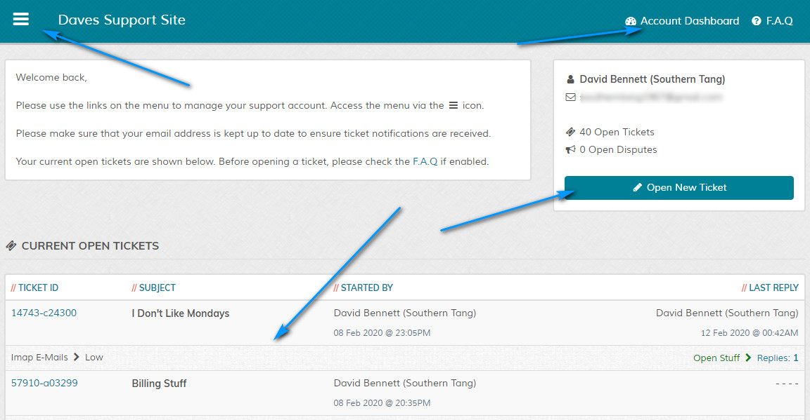
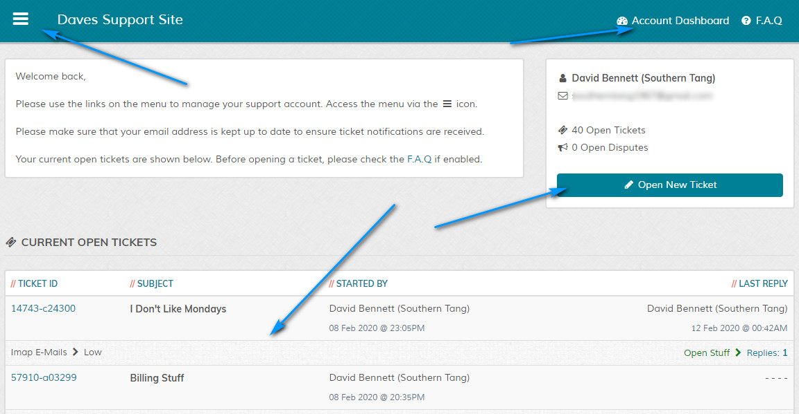

Overview
Overview
The visitor portal is where a visitor logs into the system to view his/her tickets. The main screen displays some ticket stats and latest tickets and can always be
accessed via the "My Account" link on the top menu bar.
Default Layout - Not Logged In
{kind=link}
Sign In
Visitor signs in via the "Sign In" link on the top menu.
Sign In Page
Email and password are required to sign in. A "Forgot Password" link is also shown for anyone who may have forgot their password.
Account Menu
The account menu is off canvas. Click the hamburger icon to show the menu, click off it to close:
Private F.A.Q / Private Pages
If applicable for an account, these are shown in the off canvas menu:
Account Menu
The account menu is off canvas. Click the hamburger icon to show the menu, click off it to close:
Account Dashboard
When a visitor logs in they are directed to their account dashboard. This screen shows a brief overview of open tickets and if enabled, disputes:

Clicking the "Account Dashboard" link on the top bar always returns a visitor to this screen. Clicking the "F.A.Q" link will take the visitor to the main helpdesk page for the F.A.Q, if the F.A.Q system is enabled.

{kind=link}
Clicking the "Account Dashboard" link on the top bar always returns a visitor to this screen. Clicking the "F.A.Q" link will take the visitor to the main helpdesk page for the F.A.Q, if the F.A.Q system is enabled.
Log Out
Log out is via the off canvas menu and the account menu options: